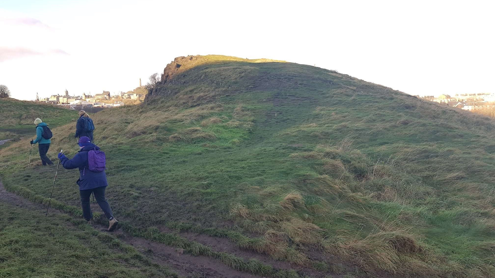
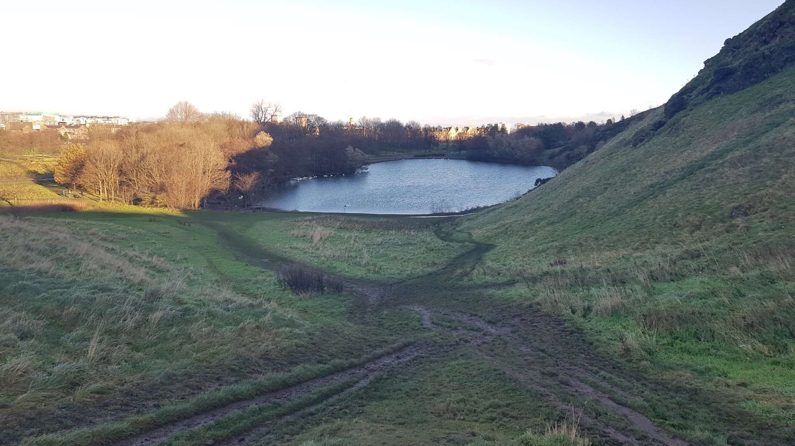

Arthur's seat is an extinct volcano in Edinburgh, Scotland, Holyrood Park, situated just eat of the city centre. The apex of this extinct volcano rises above the city to a height of 250.5 m ( 822 ft), providing excellent viewing experience for hikers and tourist alike. Arthur's seat has various foot paths and is relatively easy to climb. The name origin is still uncertain but the most popular theory is that its name is derived from legends pretraining to King Arthur. Arthur's Seat is frequently mentioned as one of the possible locations for the legendary castle, Camelot and court of the Romano-British warrior-chief, King Arthur.


Arthur's Seat first erupting 340 million years ago. At that time, Scotland was a very different place, located close to the Equator.
Arthur’s Seat has been in many fiction novels throughout history, with noteworthy ones being One Day by David Nicholls.
Arthur’s Seat features 640-acre park with include the other extinct volcano in the city and would take around 6000 steps to conquer!
Arthur’s Seat is one of four hillforts dating back around 2000 years ago.